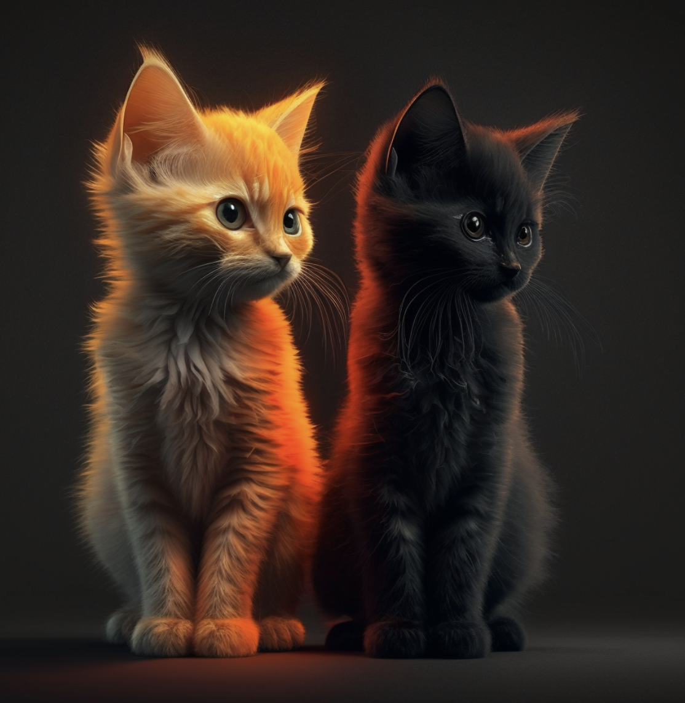
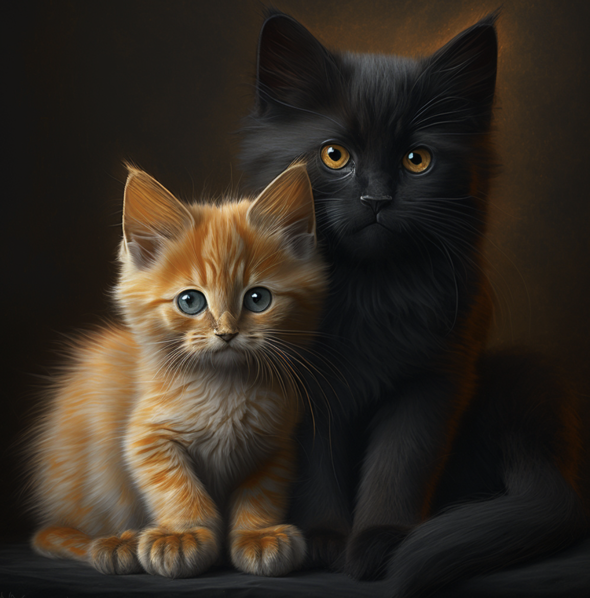

I had always loved cats. However, my busy lifestyle and living situation had prevented me from having a feline companion of my own. I would often spend my free time watching videos of cats online 📺, imagining what it would be like to have a cat of my own 🐾. My dream was to have a house full of cats growing up.
One day, I decided to visit a local animal shelter to see if I could volunteer part time. As soon as I walked through the door, I was greeted by the adorable faces of dozens of cats, each vying for my attention 🌟. I knew that I had found my calling. I spent countless hours at the shelter, helping to care for the cats and giving them the love and attention they deserved. I then adopted two cats, Joey and Boba from San Francisco SPCA shelter.
My love for cats continued to grow, and I felt a deep sense of fulfillment in giving these animals a second chance at life. My mission is to give every cat a lovely home where they can be loved, cared for, and happy. I know that there are many cats out there in need of a forever home 🏠, and I'm determined to make a difference in their lives. ❤️
 As a 3-year-old orange tabby cat, I'm full of life and energy. My name is Joey, and I'm always on the move, exploring every nook and cranny of my home.
I'm incredibly smart too, and my owner is constantly amazed at how quickly I pick up new tricks and commands. My favorite game is chasing after a little red laser dot, and I can spend hours pouncing and jumping after it.
Whether I'm playing, exploring, or learning new tricks, I bring joy and laughter into people's life. I'm proud to be a smart and lively cat, and I'm grateful for the love and care I get every day.
I'm Boba, a 3-year-old black long-haired cat with cute round eyes. I'm a bit on the lazy side and love to chill out on the couch in the living room. Whenever someone is watching TV, I'll hop on up and lay down beside them, demanding some pets and affection.
I'm a silly cat who doesn't take things too seriously. Many people have tried to teach me tricks, but I'm just not interested. I'd rather spend my time lounging and eating. Speaking of eating, food is my absolute favorite thing in the world. I'll eat just about anything, and my owner has to be careful not to leave any food out on the counter, or I'll snatch it up in a heartbeat.
Despite my laziness and slow learning, I bring a lot of joy to people. Everyone loves to pet my soft, fluffy fur and watch me roll around on the couch. And even though I may not be the smartest or most active cat, my love of food and lounging around makes me a lovable companion.